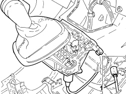
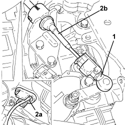
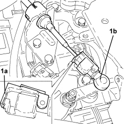

2135A12 GEAR ENGAGEMENT CABLE - R R
- Path
- Procedures > 21 GEARBOX UNIT > 2135 AUTOMATIC TRANSMISSION EXTERNAL CONTROLS > 2135A AUTOMATIC TRANSMISSION MANUAL CONTROLS > 2135A12 GEAR ENGAGEMENT CABLE - R R
- Kind
- repair procedure (removal / refitting; the operation number is the code)
- Applies to
- engines: 2.2, 1.9 JTD 16v, 2.4 JTD 20v; all production periods; only with equipment: AUTOMATIC TRANSMISSION
- Interactive page
- https://sloeber94.github.io/elrnDB-fCrm/en/#/194002335
Applies to: engines: 2.2, 1.9 JTD 16v, 2.4 JTD 20v; all production periods
 Removing
Removing
 Refitting
RefittingOp. 5530B52 BATTERY SUPPORT/DRIP TRAY - R.R
Op. 7040A65 CONSOLE SIDE CLOSING (ONE) - R.R.
Op. 7040A44 LEFT DASHBOARD SIDE TRIM - R.R.
Op. 5010C57 LEFT LOWER AIR DIFFUSER - R R
Op. 7040A26 STEERING COLUMN TRIM - R+R
Op. 7040A30 LEFT LOWER DASHBOARD TRIM - R.R.
Op. 5580C23 DRIVE SIDE KNEE PROTECTION AIR BAG MODULE R. R.
Op. 7040A24 LOWER FACIA COVER TRIM - R+R
Op. 7040A45 RIGHT DASHBOARD SIDE TRIM - R.R.
Op. 5570T85 CD/AUDIO PLAYER LOADER - R R
Op. 7040A31 DASHBOARD COMPARTMENT ASSEMBLY - R.R.
Op. 7040A56 SWITCH UNIT IN DASHBOARD - R.R.
Op. 5580P12 CONNECT PANEL REPLACE
Op. 7040A85 R R HANDLE FOR FRONT SEAT FORE AND AFT ADJUSTMENT
Op. 5040D18 AIR CONDITIONING CONTROL UNIT - R.R.
Op. 7040A60 UNDERDASHBOARD TRIM - R.R.
1. Disconnect the gear engagement cable from the automatic gearbox manual control support and lever.

Applies to: engines: 2.2, 1.9 JTD 16v, 2.4 JTD 20v; all production periods
1. Disconnect the gear engagement cable from the gear selector and from the bracket.
2. Release the seal for the bulkhead passage (2a) and remove the gear engagement cable (2b).

Applies to: engines: 2.2, 1.9 JTD 16v, 2.4 JTD 20v; all production periods
Refitting
Removing- Place the gear engagement cable back in its housing and position the sael on the bulkhead passage.
- Connect the gear engagement cable to the automatic gearbox manual control support and lever.
- Place the selector lever in position "D".
- Place the gear selector lever in the fully forwards position towards the headlamps.
- Place the selector lever three positions backwards (anti-clockwise rotation).
1. With the adjustment device (1a) in the open position, connect the gear engagement cable (1b) to the gear selector and to the bracket.
- Lock the adjustment device.

Applies to: engines: 2.2, 1.9 JTD 16v, 2.4 JTD 20v; all production periods
Op. 7040A60 UNDERDASHBOARD TRIM - R.R.
Op. 5040D18 AIR CONDITIONING CONTROL UNIT - R.R.
Op. 7040A85 R R HANDLE FOR FRONT SEAT FORE AND AFT ADJUSTMENT
Op. 5580P12 CONNECT PANEL REPLACE
Op. 7040A56 SWITCH UNIT IN DASHBOARD - R.R.
Op. 7040A31 DASHBOARD COMPARTMENT ASSEMBLY - R.R.
Op. 5570T85 CD/AUDIO PLAYER LOADER - R R
Op. 7040A45 RIGHT DASHBOARD SIDE TRIM - R.R.
Op. 7040A24 LOWER FACIA COVER TRIM - R+R
Op. 5580C23 DRIVE SIDE KNEE PROTECTION AIR BAG MODULE R. R.
Op. 7040A30 LEFT LOWER DASHBOARD TRIM - R.R.
Op. 7040A26 STEERING COLUMN TRIM - R+R
Op. 5010C57 LEFT LOWER AIR DIFFUSER - R R
Op. 7040A44 LEFT DASHBOARD SIDE TRIM - R.R.
Op. 7040A65 CONSOLE SIDE CLOSING (ONE) - R.R.
Topics linked from this page (17)
- 5010C57 LEFT LOWER AIR DIFFUSER - R R
- 5040D18 AIR CONDITIONING CONTROL UNIT - R.R.
- 5530B10 BATTERY - R+R
- 5530B52 BATTERY SUPPORT/DRIP TRAY - R.R
- 5570T85 CD/AUDIO PLAYER LOADER - R R
- 5580C23 DRIVE SIDE KNEE PROTECTION AIR BAG MODULE R. R.
- 5580P12 CONNECT PANEL REPLACE
- 7040A24 LOWER FACIA COVER TRIM - R+R
- 7040A26 STEERING COLUMN TRIM - R+R
- 7040A30 LEFT LOWER DASHBOARD TRIM - R.R.
- 7040A31 DASHBOARD COMPARTMENT ASSEMBLY - R.R.
- 7040A44 LEFT DASHBOARD SIDE TRIM - R.R.
- 7040A45 RIGHT DASHBOARD SIDE TRIM - R.R.
- 7040A56 SWITCH UNIT IN DASHBOARD - R.R.
- 7040A60 UNDERDASHBOARD TRIM - R.R.
- 7040A65 CONSOLE SIDE CLOSING (ONE) - R.R.
- 7040A85 R R HANDLE FOR FRONT SEAT FORE AND AFT ADJUSTMENT